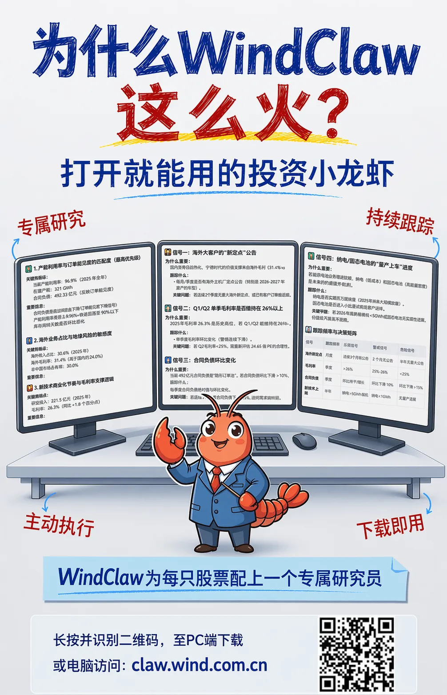

给每只股票，都配一个专属研究员

你问它们一只股票怎么看，它们都能很快给你一大段分析，逻辑、风险、机会、结论，看起来都挺完整。我最近尝试把同一个问题，分别丢给了通用 AI 和 WindClaw专属个股小龙虾：“宁德时代未来走势判断”。
01 这个问题，看起来通用AI 也能答
市场地位、业绩表现、增长引擎、风险判断，层层往下写，读起来很顺，也很像一篇研究摘要。如果你只是想快速了解一只股票大概在发生什么，这样的回答确实够用了。你读完会觉得：嗯，讲得挺全。但接下来你很容易停在那儿——那后面我该怎么办？该怎么继续盯？哪几个变量最关键？哪些变化会推翻现在的判断？02 但WindClaw 不只是在回答，而是在搭一个后面还能继续用的框架
同样问：宁德时代未来怎么走势判断，它当然也会给你分析。但它和通用 AI 不太一样的地方在于：它不是写完一段就结束。而是在回答的同时，开始把这只股票后面还能继续用的框架一起搭出来。因为你会发现，WindClaw 给你的，不只是这一问的结论。它会顺着这只股票本身，往下拆：哪些信息是核心数据，哪些是正面驱动，哪些是风险提示，未来走势怎么看，投资建议怎么落，以及最重要的——后面该继续跟踪什么。这就不是单纯把“宁德时代未来走势判断”答完了。它已经在围着宁德时代这只股票本身，帮你把研究骨架搭了起来。也就是说，通用 AI 更像是在生成一份完整回答。WindClaw 专属个股小龙虾更像是在回答的同时，把“这只股票接下来还该怎么继续用”的框架也一起铺了出来。03 所以真正拉开差距的，是后面该怎么办，还能不能继续用？
通用AI的回答，虽然逻辑有了，结论有了，风险和机会也都说到了。你当然也可以继续追问。可很多时候，新的问题又会重新长成一份新的回答。看起来每次都在分析，实际上每次都更像重新组织一遍。因为它本来就不是围绕一次提问在工作，而是围绕这只股票在工作。如果我准备继续拿这只股票，接下来一段时间最值得持续跟踪的信号是什么？如果下个月装机数据不及预期，最先该重看哪段逻辑？如果海外扩产推进变慢，影响会先落在哪个变量上？如果现在更该盯的不是股价，而是盈利预期，那应该先看哪几项？“如果我准备继续拿这只股票，接下来一段时间最值得持续跟踪的信号是什么？”WindClaw 不会重新给你写一篇新的分析。它会直接顺着前面的判断，往下给你搭出一套更具体的跟踪方案：接下来该盯哪些核心信号，这些信号为什么重要，应该按什么频率看，如果哪些地方变了，原来的判断要不要更新。到这里，它做的就不是“再回答一个问题”了。而是开始把你后面这段持有期里，真正会反复用到的研究动作继续接下去。不只是“分析一只股票”。而是把一只股票，从“问一次”变成“能持续研究下去”。04 再把任务接上，它就不只是能继续用了，更会主动帮你盯
不只是“分析一只股票”。而是把一只股票，从“问一次”变成“能持续研究下去”再到“主动接了过去”。因为当你真的开始长期跟一只股票，后面最花时间的，往往已经不是“再分析一次”。公告出来了，要不要看；财报更新了，要不要重新过一遍；关键变量变了，要不要马上重估；今天有什么异动，这周有没有新催化，这个月有没有新数据；有些东西看起来不大，但又怕漏掉。公告出来了，提醒我；财报更新了，先帮我拆重点；我盯的几个关键变量变了，第一时间告诉我；每日、每周、每月，自动给我做跟踪总结。到这里，专属个股小龙虾就不只是更懂这只股票。它已经替你把那些复杂、高重复、但又不能不做的研究动作接了过去。1、PC电脑访问：claw.wind.com.cn前往官网下载2、桌面端微信可点击文末【阅读原文】自动前往官网下载